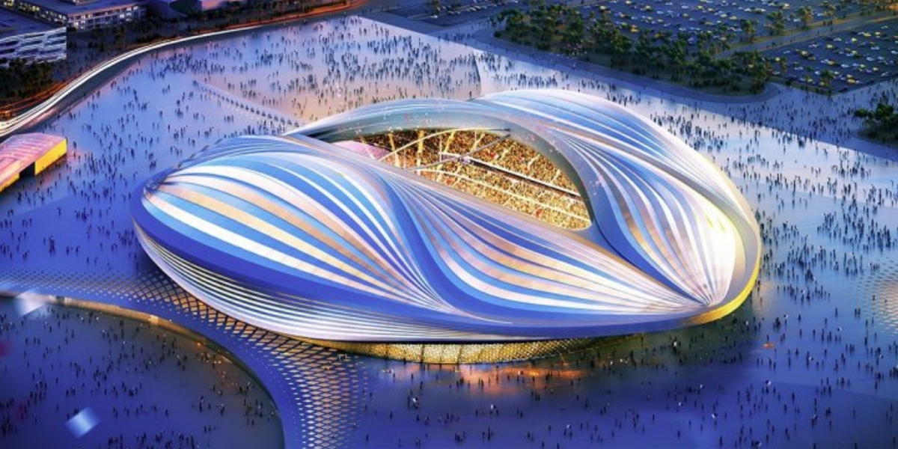
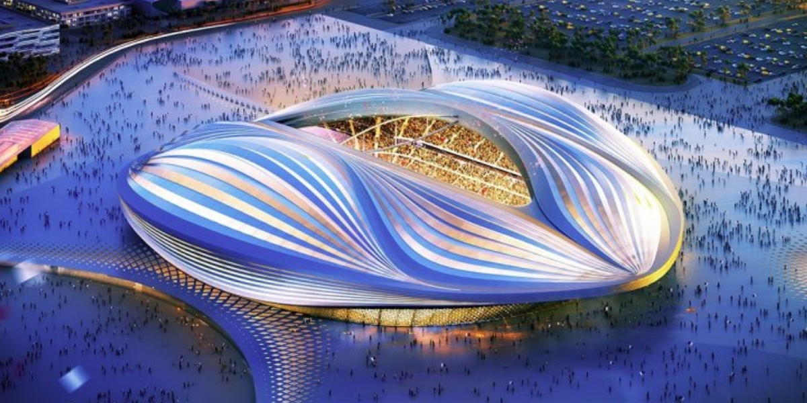
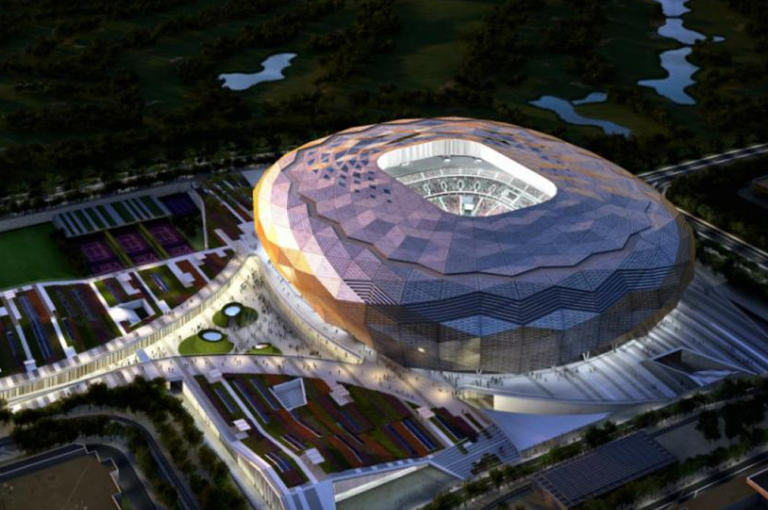
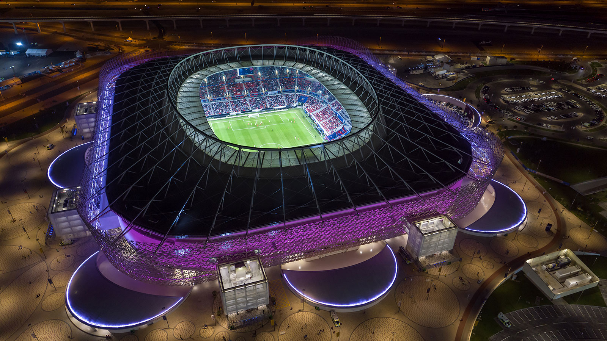
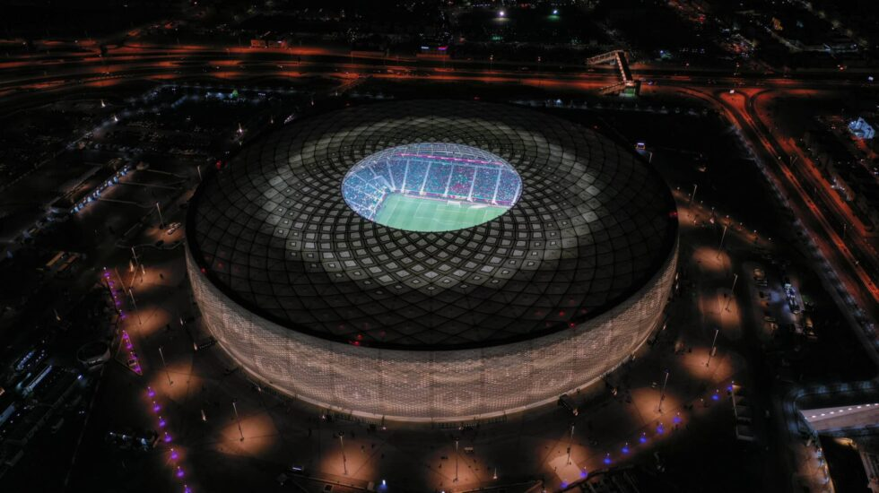
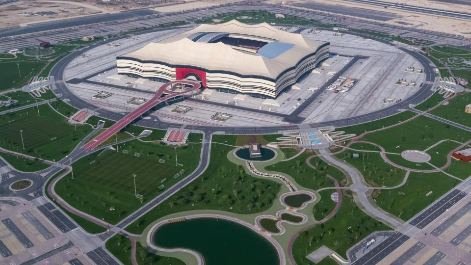
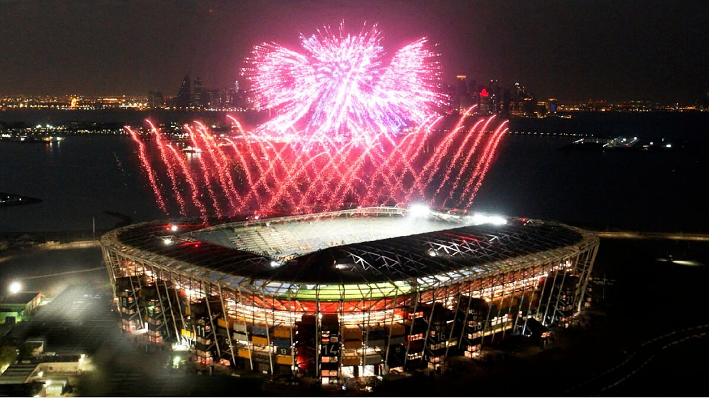
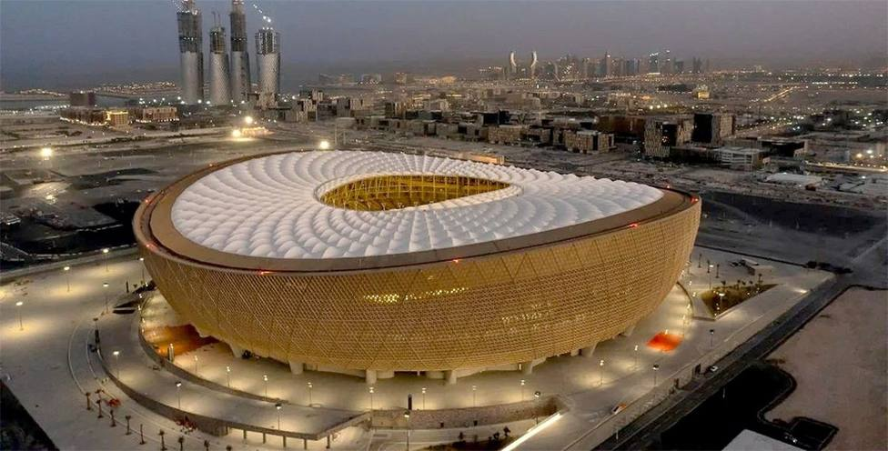

Estadio Al Janoub
Aforo: 40000 personas
Aforo: 40000 personas
Aforo: 40000 personas
Aforo 45000 personas
Aforo 44400 personas
Aforo 45400 personas

Aforo 60000 personas
Aforo 44000 personas
Aforo 80000 personas
